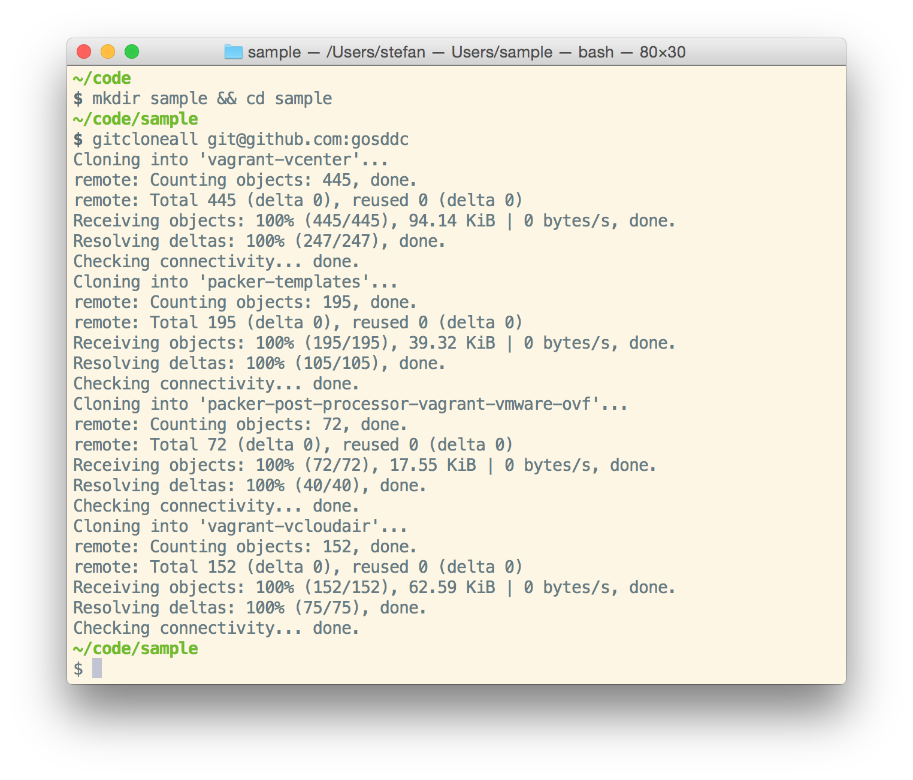
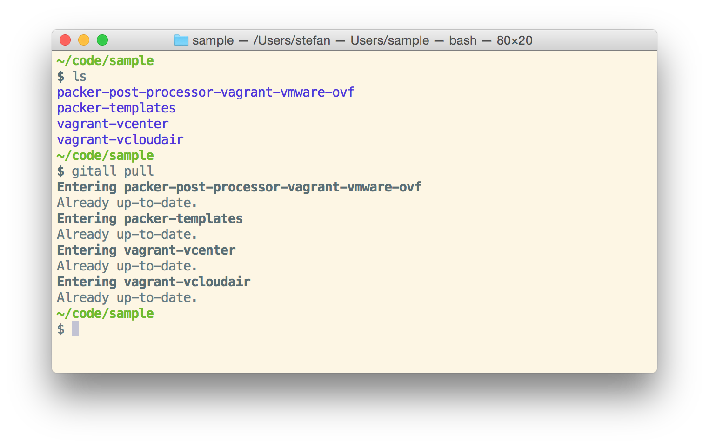
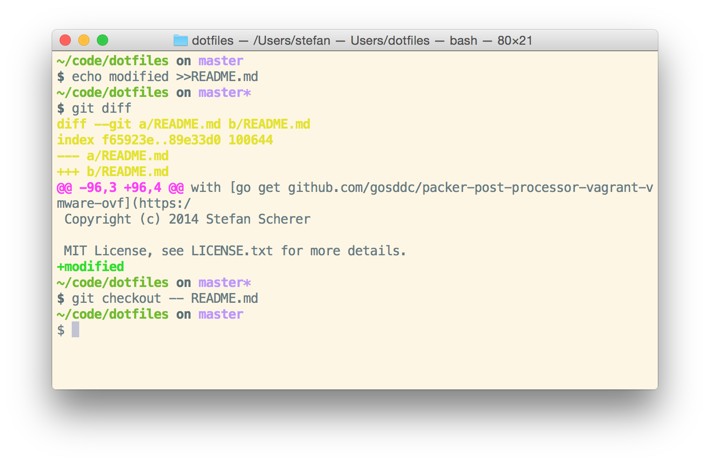
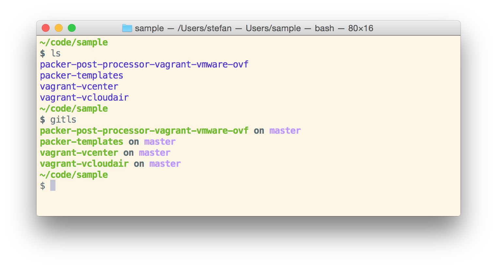

How to work across GitHub repos
If you are a member of a GitHub organization you sometimes have to work across all repos.
Here are some bash functions that help me doing such cross repo tasks.
Clone all org's repos
If you want to clone all repos of a GitHub organization, or of a specific user, use this command.
gitcloneall git@github.com:YOUR_ORG [user[:pass]]
The optional user name is only needed for private repos. To retrieve the list of repos we have to access the GitHub API with https + Basic Auth, so that's the user name for. If you skip the password, curl will ask you for it.

To make the command gitcloneall work you have to add the following function to your bash ~/.functions file.
function gitcloneall {
if [ "$#" -lt 1 ]; then
echo "Usage: gitcloneall git@github.com:YOUR_ORG [user[:pass]]"
echo "Clones all repos of a GitHub org or user."
return
fi
org=$(echo $1 | sed -e s/.*://)
user=""
if [ "$#" -eq 2 ]; then
user="-u $2"
fi
curl $user -s https://api.github.com/orgs/$org/repos?per_page=200 | jq '.[] | .ssh_url' | sed -e s/git.*$org/$1/ | xargs -I % git clone %
}
The function first lists all the repos with the GitHub API. Next it filters the JSON response with jq and calls git clone for each repo with its SSH URL. The first part of the SSH URL will be replaced with the value given in the command line. This is to access GitHub with another SSH key than your default.
If you don't know jq yet, jq is like sed for JSON data.
Use your favorite package manager to install jq:
OSX: brew install jq
Linux: sudo apt-get install jq
Windows: cinst jq
Start a git command for all dirs
After cloning all repos you now can start a git command for all directories found with the gitall function.
gitall pull
vi */README.md
gitall add REAMDE.md
gitall commit -m "updated README"
gitall push
gitall status

You have to add the gitall function to your bash functions.
function gitall {
if [ "$#" -lt 1 ]; then
echo "Usage: gitall pull|push|commit ..."
echo "Starts a git command for each directory found in current dir."
return
fi
if tput setaf 1 &> /dev/null; then
BOLD=$(tput bold)
RESET=$(tput sgr0)
else
BOLD=""
RESET="\033[m"
fi
for DIR in `ls`;
do
if [ -d $DIR/.git ]; then
echo $BOLD"Entering "$DIR$RESET
pushd $DIR >/dev/null
git "$@"
popd >/dev/null
fi
done
}
Short git status of all dirs
The gitall status command was too large for me. I like my bash prompt that shows me the current git branch and whether there are local changes.
Here is a short example. First you can see that I am in my dotfiles and in branch master without changes. The echo command changes one file in my repo. Then the prompt changes to master*

So I have made a gitls function that shows me these information for all directories in the current dir.

And again, you have to add this to your bash functions:
function gitls {
if tput setaf 1 &> /dev/null; then
tput sgr0
if [[ $(tput colors) -ge 256 ]] 2>/dev/null; then
GREEN=$(tput setaf 70)
PURPLE=$(tput setaf 141)
else
GREEN=$(tput setaf 2)
PURPLE=$(tput setaf 1)
fi
BOLD=$(tput bold)
RESET=$(tput sgr0)
else
GREEN="\033[1;32m"
PURPLE="\033[1;35m"
BOLD=""
RESET="\033[m"
fi
for d in `find . -name ".git"`; do
# check if we're in a git repo
git --git-dir=$d --work-tree=$d/.. rev-parse --is-inside-work-tree &>/dev/null # || return
# quickest check for what branch we're on
branch=$(git --git-dir=$d --work-tree=$d/.. symbolic-ref -q HEAD | sed -e 's|^refs/heads/||')
# check if it's dirty (via github.com/sindresorhus/pure)
dirty=$(git --git-dir=$d --work-tree=$d/.. diff --quiet --ignore-submodules HEAD &>/dev/null; [ $? -eq 1 ]&& echo -e "*")
dir=`echo $d | sed -e 's|^\.\/||' -e 's|\/.git||'`
echo $RESET$BOLD$GREEN"$dir$RESET$BOLD on "$PURPLE$branch$dirty$RESET
done
}
You can find all these functions in my dotfiles repo in the .functions file.
Have fun!